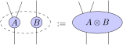

2. Tensor Network Theory#
Contents
2.1. Overview#
In this lecture we will introduce the basic concepts of tensor network theory. We will start with a brief overview of the history of tensor networks and their relevance to modern physics. We will then introduce the basic mathematical concepts of tensor networks, including multi-linear algebra and graphical notation. Finally, we will discuss the computational complexity of tensor networks and their relevance to quantum many-body physics.
This discussion is largely based on [BC17].
2.1.1. History#
The history of tensor networks is a fascinating journey through the evolution of profound theoretical ideas and evolutions, as well as the development of computational methods and tools. These ideas have been developed in a variety of contexts, but have been especially relevant to the study of quantum physics and machine learning.
Early Foundations:
The roots of tensor networks can be traced back to the early development of linear algebra and matrix notation in the 19th century, pioneered by mathematicians like Arthur Cayley and James Sylvester.
The concept of tensors as multi-dimensional arrays of numbers began to emerge in the late 19th and early 20th centuries.
Matrix Product States and DMRG:
The birth of modern tensor network theory can be attributed to the introduction of MPS in the 1960s (?).
One of the earliest, and still most widely used tensor network algorithm is DMRG. It was developed by Steven White in 1992, and provides one of the most efficient methods for simulating one-dimensional quantum many-body systems.
Quantum Information Theory:
In the 1980s and 1990s, the field of quantum information theory began to emerge, driven by (add names here)
Concepts such as quantum entanglement and quantum information became central to the study of quantum many-body systems.
Higher-Dimensional Tensor Networks:
As the field progressed, tensor network methods were extended to higher-dimensional systems, leading to the emergence of more general tensor network states (TNS)..
Two-dimensional tensor networks such as Projected Entangled Pair States (PEPS) and Multi-scale Entanglement Renormalization Ansatz (MERA) were introduced in the early 2000s.
Tensor Networks in other disciplines:
Many of the concepts and methods developed in the context of tensor networks have been applied to other disciplines, one of the most prominent being machine learning.
Unsuprisingly, they also play a central role in quantum computing, where tensor network algorithms provide a natural language to explore quantum circuit simulations.
Ongoing Research and Applications
Tensor network theory continues to be a vibrant and evolving field with ongoing research in various directions, such as the development of efficient tensor contraction algorithms, the application of tensor networks for understanding quantum phases of matter, the development of tensor network algorithms for quantum computing, and the application of tensor networks to machine learning.
2.2. Tensors#
Before discussing tensor networks, it is necessary to understand what tensors are. Furthermore, before really understanding tensors, it is instructive to reiterate some basic concepts of linear algebra for the case of vectors and matrices, which are nothing but specific cases of tensors. In fact, many of the concepts and ideas that are introduced and discussed are defined in terms of thinking of tensors as vectors or matrices.
In what follows, vectors and matrices will be thought of from the viewpoint of computers, where they are represented using regular one- and two-dimensional arrays of either real or complex numbers. Nevertheless, much of the discussion can be trivially generalized to arbitrary vector spaces and linear maps.
2.2.1. Linear Algebra – Vectors and Matrices#
In general, a vector is an object in a vector space, which can be described by a list of numbers that correspond to the components of the vector in some basis. For example, a vector in a two-dimensional space is in its most general form described by \(\vec{v} = \left[v_1, v_2\right]^T\).
As a reminder, the defining properties of vector spaces make sure that the following operations are well-defined:
Vectors can be added together, i.e. \(\vec{v} + \vec{w}\) is a vector.
Vectors can be multiplied by scalars, i.e. \(\alpha \vec{v}\) is a vector.
These operations behave as expected, i.e. there is a notion of associativity, commutativity, and distributivity.
Given two such vector spaces (not necessarily distinct) it is possible to define a linear map between them, which is just a function that preserves the vector space structure. In other words, a linear map \(A \colon W ← V\) maps vectors from one vector space \(V\) to another vector space \(W\). Because of the structure of vector spaces, and the requirement of linearity, such a map is completely determined by its action on the basis vectors of \(V\). This leads in a very natural way to the notion of a matrix by considering the following construction, where \(v_i\) are the basis vectors of \(V\) and \(w_i\) are the basis vectors of \(W\):
where \(A_{ij}\) are the components of the matrix \(A\) in the basis \(v_i\) and \(w_j\). In other words, the abstract notion of a linear map between vector spaces can be represented by a concrete matrix, and the action of the map is nothing but the usual matrix product.
In particular, it is instructive to think of the columns of the matrix \(A\) as labelling the components of the input vector space, while the rows label the component of the output vector space.
2.2.2. Multi-Linear Algebra: Tensors and Tensor Products#
Using the same logic as above, it is possible to generalize the notion of a linear map by making use of the tensor product, which is nothing but an operation that can combine two vector spaces \(V\) and \(W\) into a new vector space \(V \otimes W\). The tensor product is defined in such a way that the combination of vectors from the original vector spaces preserves a natural notion of linearity, i.e. the following equality holds for all vectors \(v \in V\), \(w \in W\), and scalars \(\lambda\):
This new vector space can be equipped with a canonical basis, which is constructed by taking the tensor product of the basis vectors of the original vector spaces. For example, if \(V\) and \(W\) are two-dimensional vector spaces with basis vectors \(v_i\) and \(w_j\), respectively, then the basis vectors of \(V \otimes W\) are given by \(v_i \otimes w_j\). In other words, the vectors in \(V \otimes W\) are linear combinations of all combinatinos of the basis vectors of \(V\) and \(W\).
When considering how to represent a vector in this new vector space, it can be written as a list of numbers that correspond to the components of the vector in that basis. For example, a vector in \(V \otimes W\) is described by:
Here, the tentative name \(t\) was used to denote that this is in fact a tensor, where \(t_{i_1i_2}\) are the components of that tensor \(t\) in the basis \(v_{i_1} \otimes w_{i_2}\). Because of the induced structure of the tensor product, it is more natural and very common to express this object not just as a list of numbers, but by reshaping that list into a matrix. In this case, the components of the \(i_1\)-th row correspond to basis vectors that are built from \(v_{i_1}\), and similarly the \(i_2\)-th column corresponds to basis vectors that are built from \(w_{i_2}\).
As the tensor product can be generalized to more than two vector spaces, this finally leads to the general definition of a tensor as an element of the vector space that is built up from the tensor product of an arbitrary number of vector spaces. Additionally, the components of these objects are then naturally laid out in a multi-dimensional array, which is then by a slight misuse of terminology also called a tensor.
Note
The reshaping operation of components from a list of numbers into a multi-dimensional array is nothing but a mapping between linear indices \(I\) and Cartesian indices \(i_1, i_2, \cdots, i_N\). This is a very common and useful trick which allows reinterpreting tensors as vectors, or vice versa.
2.2.3. Multi-Linear Algebra: Tensors and Multi-linear Maps#
Due to the fact that the tensor product of vector spaces is a vector space in of itself, it is again possible to define linear maps between such vector spaces. Keeping in mind the definition of a linear map from (2.1), the columns now label components of the input vector space, while the rows label components of the output vector space. Now however, the components of the input and output vector spaces are themselves comprised of a combination of basis vectors from the original vector spaces. If a linear order of these combinations can be established, the linear map can again be represented by a matrix:
The attentive reader might have already noted that the definition of a linear map as a matrix strongly resembles the definition of a vector in a tensor product vector space. This is not a coincidence, and in fact the two can easily be identified by considering the following identification (isomorphism):
Note
For finite-dimensional real or complex vector spaces without additional structure, this isomorphism is trivial and is nothing but the reshaping operation of the components of a vector into a matrix. However, note that this is a choice, which is not unique, and already differs for row- and column-major order. In a more general setting, the identification between \(V \otimes W^*\) and \(V \leftarrow W\) is not an equivalence but an isomorphism. This means that it is still possible to relate one object to the other, but the operation is not necessarily trivial.
2.2.4. Multi-Linear Algebra: Conclusion#
The entire discussion can be summarized and leads to the following equivalent definitions of a tensor:
A tensor is an element of a tensor product of vector spaces, which can be represented as a multi-dimensional array of numbers that indicate the components along the constituent basis vectors. (a tensor is vector-like)
A tensor is a multi-linear map between vector spaces, which can be represented as a matrix that represents the action of the map on the basis vectors of the input vector space. (a tensor is matrix-like)
The equivalence of these two definitions leads to the lifting of many important facets of linear algebra to the multi-linear setting.
2.3. Graphical Notation and Tensor Operations#
One of the main advantages of tensor networks is that they admit a very intuitive graphical notation, which greatly simplifies the expressions involving numerous indices. This notation is based on the idea of representing a single tensor as a node in a graph, where the indices of the tensor are depicted by legs sticking out of it, one for each vector space. As an example, a rank-four tensor \(R\) can be represented as:

2.3.1. Indexing#
In this notation, the individual components of the tensor can be recoverd by fixing the open legs of a diagram to some value, and the resulting diagram is then a scalar. For example, the component \(R_{i_1,i_2,i_3,i_4}\) is given by:
2.3.2. Grouping and Splitting of Indices#
Because of the isomorphism {eq}{eq:tensor_isomorphism}, the legs of the tensor can be freely moved around, as long as their order is preserved. In some contexts the shape of the node and the direction of the tensor can imply certain properties, such as making an explicit distinction between the isomorphic representations, but in what follows we will not make this distinction.
Furthermore, this naturally gives a notion of grouping and splitting of indices, which is just a reinterpretation of a set of neighbouring vector spaces as a single vector space, and the inverse operation. For example, the following diagrams are equivalent:

Owing to the freedom in choice of basis, the precise details of grouping and splitting are not unique. One specific choice of convention is the tensor product basis, which is precisely the one we have used in the discussion of multi-linear algebra. More concretely, one choice that is often used is the Kronecker product, which in the setting of column-major ordering is given explicitly by grouping indices as follows:
Here \(d_i\) is the dimension of the corresponding vector space, and \(I\) is the resulting linear index. Note again that so long as the chosen convention is consistent, the precise method of grouping and splitting is immaterial.
2.3.3. Outer Products#
Of course, in order to really consider a tensor network, it is necessary to consider diagrams that consist of multiple tensors, or in other words of multiple nodes. The simplest such diagram represents the outer product of two tensors. This is represented by two tensors being placed next to eachother. The value of the resulting network is simply the product of the constituents. For example, the outer product of a rank three tensor \(A\) and a rank two tensor \(B\) is given by:
2.3.4. Traces#
More complicated diagrams can be constructed by joining some of the legs of the constituents. In a matter similar to the conventional Einstein notation, this implies a summation over the corresponding indices.
If two legs from a single tensor are joined, this signifies a (partial) trace of a tensor over these indices. For example, the trace of a rank three tensor \(A\) over two of its indices is given by:
In this notation, the cyclic property of the trace follows trivially by sliding one of the matrices around the loop of the diagram. As this only changes the placement of the tensors in the network, and not the value, the graphic proof of \(\tr (AB) = \tr (BA)\) is found.

2.3.5. Contractions#
The most common tensor operation used is contraction, which is the joining of legs from different tensors. This can equivalently be thought of as a tensor product followed by a trace. For example, the contraction between two pairs of indices of two rank-three tensors is drawn as:
Famililiar examples of contraction are vector inner products, matrix-vector multiplication, matrix-matrix multiplication, and matrix traces.
2.5. Tensor Factorizations#
Linear maps admit various kinds of factorizations, which are instrumental in a variety of applications. They can be used to generate orthogonal bases, to find low-rank approximations, or to find eigenvalues and vectors. In the context of tensors, the established theory for factorizations of matrices can be generalized by interpreting them as linear maps, and then applying the same factorization to the corresponding matrix partition of the constituent vector spaces in a codomain and domain, after which everything representation. Thus, the only additional piece of information needed consists of a carries over. In this section we will only discuss the most common factorizations of tensors, but the reasoning can be generalized to any factorization of linear maps.
2.5.1. Eigenvalue Decomposition#
The Eigen decomposition of a matrix \(A\) is a factorization of the form:
where \(V\) is a matrix of eigenvectors, and \(\Lambda\) is a diagonal matrix of eigenvalues. In particular, the set of eigenvectors form a basis for all possible products \(Ax\), which is the same as the image of the corresponding matrix transformation. For normal matrices, these eigenvectors can be made orthogonal and the resulting decomposition is also called the spectral decomposition.
The eigenvalue decomposition mostly finds it use in the context of linear equations of the form:
where \(v\) is an eigenvector of \(A\) with eigenvalue \(\lambda\).
For tensors, the eigenvalue decomposition is defined similarly, and the equivalent equation is diagrammatically represented as:
2.5.2. Singular Value Decomposition#

2.5.3. QR Decomposition#
2.5.4. Nullspaces#
2.6. Computational Complexity#
Tensor Networks
context, history, purpose, relevance
multi-linear algebra
graphical notation
computational complexity